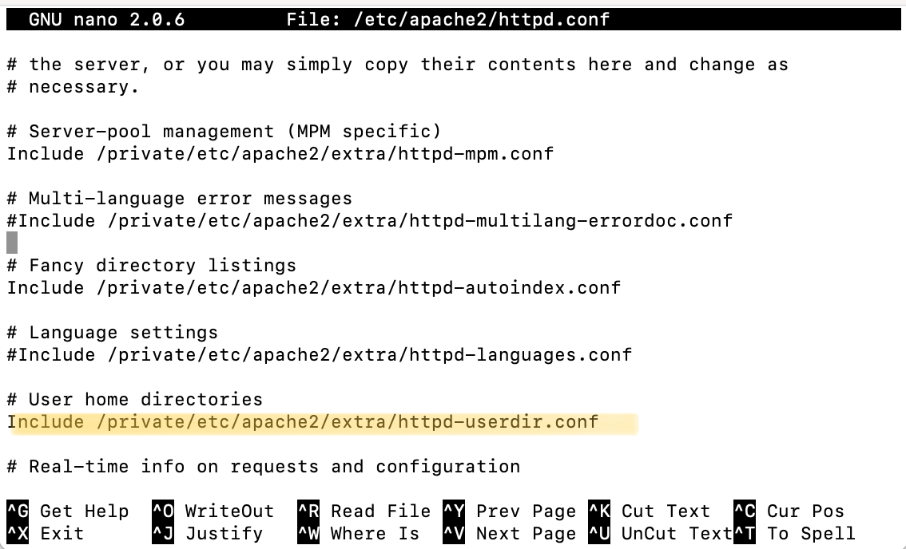
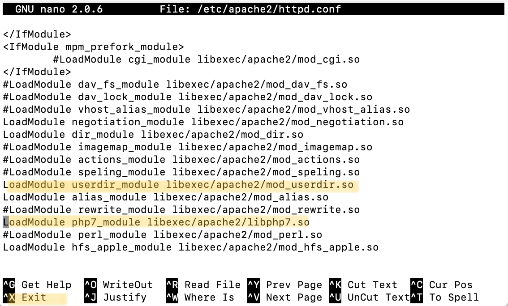

Creating Your First Website
Installing Apache and PHP - macOS Big Sur
Step 1: First press command space to seach and open your terminal.
Step 2: Apache should come preinstalled so to start the Apache server just type the following into your terminal, you may also need to type your computers password if you are prompted
sudo apachectl start
sudo nano /etc/apache2/httpd.conf 
Step 5: Press control x followed by y and enter to save and exit
Step 6: Check your Apache version by typing the following into the terminal and write this down for later
httpd -v
sudo nano "/etc/apache2/users/username.conf"
Step 9: Now set the files permission settings by typing the following:
sudo chmod 644 "/etc/apache2/users/username.conf"
sudo nano /etc/apache2/extra/httpd-userdir.confStep 11: Next uncomment this line:
Include /private/etc/apache2/users/*.confStep 12: Press control x followed by y and enter to save and exit
sudo nano /etc/apache2/httpd.confStep 14: Now press control w and search for all instances of the word "override" and change "None" to "All"
sudo apachectl restartStep 17: Finally check that your sites folder exists in your Users/username/ directory